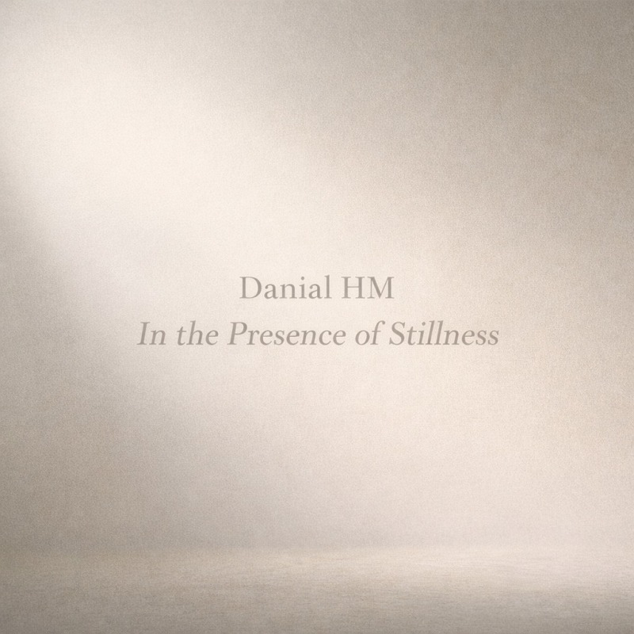

Album · January 23, 2026
In the Presence of Stillness
The first complete album statement by Danial HM: eight connected pieces moving through silence, hidden feeling, sorrow, transformation and inward clarity.
“Stillness is never empty.”
ArtistDanial HM
LabelDanial HM Records
Release dateJanuary 23, 2026
FormatAlbum
UPC199938517923
ISRCAlbum track archive
Track listing
01IntroQT6G92566212
02Hidden HeartQT6G92566213
03The Light of SorrowQT6G92566214
04The Last NightQT6G92566215
05The Tree of TruthQT6G92566216
06MiracleQT6G92566217
07Breath of EternityQT6F32540701
08Where Pain Learns to BloomQT6FP2559405